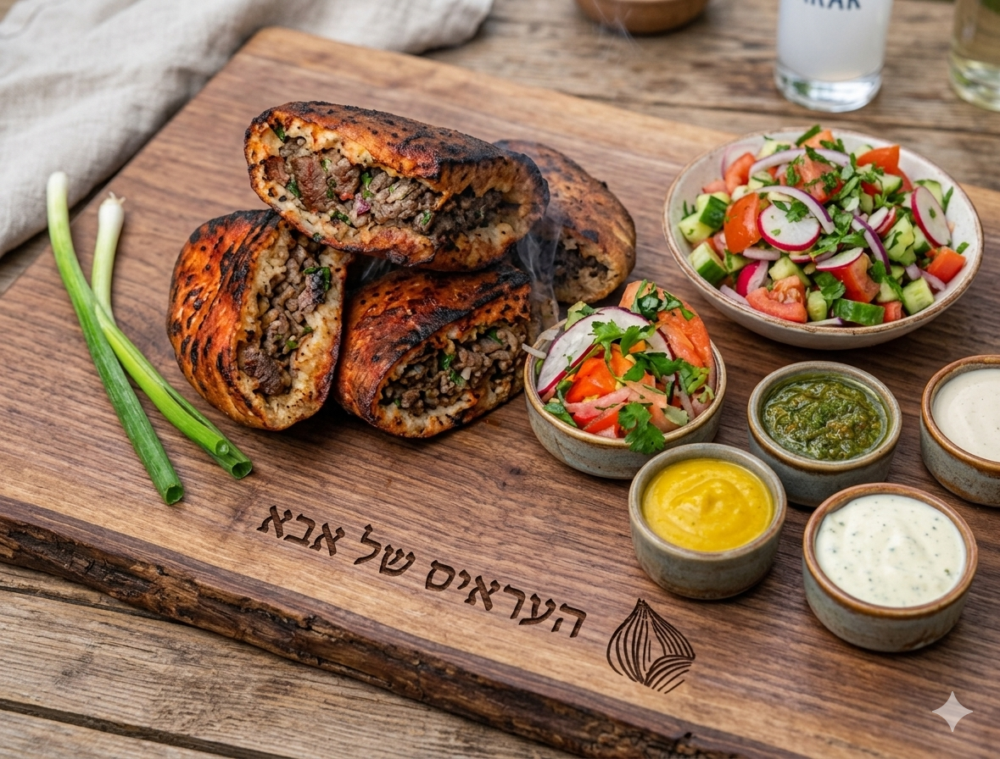

English
English
מתכון
עראייס
מנה קלאסית שקל להכין בבית.
עראייס הוא מאכל קלאסי שקל מאוד להכין בבית. מקורו בלבנון וסוריה, והוא הובא לישראל על ידי קהילות יהודיות מרחבי העולם הערבי. כיום הוא נחשב לאחד ממאכלי הרחוב האייקוניים ביותר בישראל – קריספי מבחוץ, עסיסי מבפנים, ומושלם כשהוא יוצא מהגריל לצד טחינה.
מצרכים
- פיתות: 6 פיתות, חתוכות לחצאים או רבעים.
- לתערובת הבשר:
- 500 גרם בשר בקר טחון טרי (או תערובת של בקר עם 100 גרם שומן טלה / רבע כמות בשר טלה).
- 1/2 צרור פטרוזיליה, קצוצה דק.
- 1 בצל גדול, קלוף וקצוץ דק.
- 1.5 כפית מלח.
- 1/2 כפית סודה לשתייה.
- 1/2 כפית קינמון.
- 1/2 כף תבלין לגריל/ברביקיו.
- 2 כפות מייפל טהור או סילאן (דבש תמרים).
- 1 כפית פלפל שחור טחון.
- רשות: חופן אגוזים קצוצים דק (פיסטוקים או צנוברים).
הוראות הכנה
- קיצוץ: קצצו את הבצל והפטרוזיליה דק ככל האפשר.
- ערבוב: בקערה גדולה, ערבבו את הבצל והפטרוזיליה הקצוצים עם הבשר הטחון וכל שאר המרכיבים. ערבבו היטב עד לקבלת תערובת אחידה.
- טיפ: לקבלת טעם עשיר ואותנטי יותר, מומלץ מאוד להוסיף שומן טלה.
- הרכבה: חתכו את הפיתות לרבעים ומלאו כל רבע בתערובת הבשר. דחסו את המילוי בחוזקה פנימה ונקו שאריות בשר מהקצוות של הפיתה.
- צלייה: הניחו את רבעי העראייס על גריל בחום בינוני כאשר הצד הפתוח פונה כלפי מטה (צד הבשר תחילה) עד שהבשר משחים ונסגר. לאחר מכן, הפכו וצלו את שאר הצדדים עד שהפיתה מזהיבה ונהיית קריספית.
- טיפ למקצוענים: כדי לשמור על עסיסיות הבשר, ניתן להתיז מעט מים על הצד הצלוי בכל פעם שהופכים את העראייס.